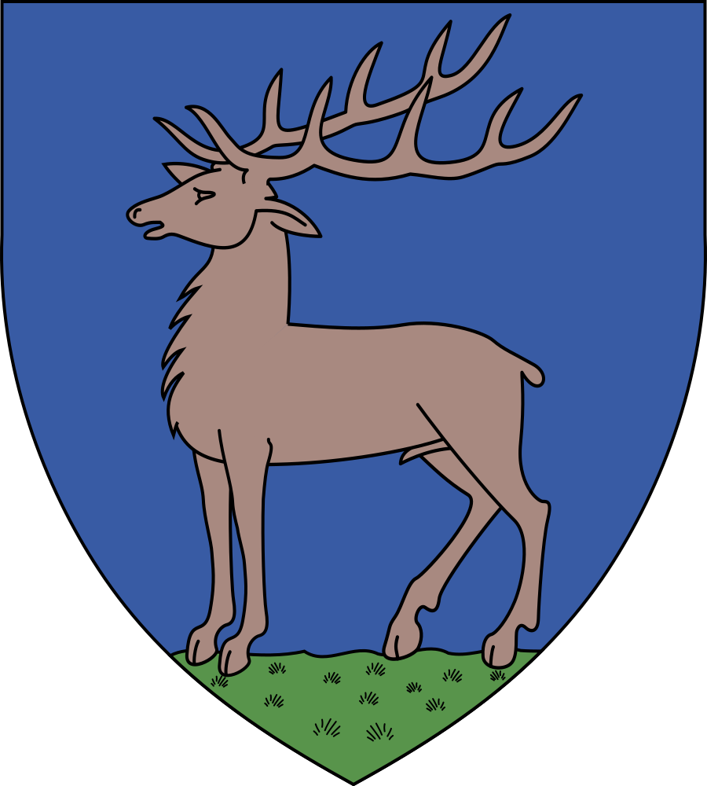

Unitati de invatamant
TITLURI | Știri Locale
Vremea in Judet
Județul Gorj
Municipiul Reședință
Reședința județului Gorj este Târgu Jiu, un oraș cu o mare importanță culturală și istorică.
Număr de Locuitori
Populația totală a județului Gorj este de aproximativ 330.000 de locuitori, conform celor mai recente date disponibile.
Orașele din Județul Gorj
atingeti numele orasului pentru site oficial
Județul Gorj include 9 orașe
Comunele din Județul Gorj
atingeti numele comunei pentru site oficial
Județul Gorj este format din 61 de comune, fiecare având mai multe sate componente:
- Albeni
- Alimpești
- Aninoasa
- Arcani
- Baia de Fier
- Bălănești
- Bălești
- Bărbătești
- Bengești-Ciocadia
- Berlești
- Bâlteni
- Bolboși
- Borăscu
- Brănești
- Bumbești-Pițic
- Bustuchin
- Câlnic
- Căpreni
- Cătunele
- Ciuperceni
- Crasna
- Crușeț
- Dănciulești
- Dănești
- Drăgotești
- Drăguțești
- Fărcășești
- Glogova
- Godinești
- Hurezani
- Ionești
- Jupânești
- Lelești
- Licurici
- Logrești
- Mătăsari
- Mușetești
- Negomir
- Padeș
- Peștișani
- Plopșoru
- Polovragi
- Prigoria
- Roșia de Amaradia
- Runcu
- Săcelu
- Samarinești
- Săulești
- Schela
- Scoarța
- Slivilești
- Stănești
- Stejari
- Stoina
- Țânțăreni
- Telești
- Turburea
- Turcinești
- Urdari
- Văgiulești
- Vladimir
Religia
Majoritatea locuitorilor din județul Gorj sunt de religie ortodoxă, cu mici comunități de alte confesiuni.
Suprafața
Județul Gorj acoperă o suprafață totală de aproximativ 5.602 km², fiind considerat un județ de dimensiune medie în România.
Importanță Geografică și Culturală
Județul Gorj, situat în sud-vestul României, în regiunea istorică Oltenia, reprezintă un spațiu de o importanță deosebită atât din punct de vedere geografic, cât și cultural. Acest județ este delimitat de:
- Munții Parâng la nord – parte din Carpații Meridionali, oferind o barieră naturală și un peisaj montan impresionant.
- Câmpia Olteniei la sud – una dintre cele mai fertile regiuni ale țării, ce susține o agricultură diversificată și productivă.
Geografic, județul Gorj se remarcă prin:
- Diversitatea reliefului – incluzând zone montane, deluroase și câmpii, ce îi conferă un potențial turistic considerabil.
- Munții Parâng – cu vârfuri ce depășesc 2.500 de metri, oferind oportunități pentru turismul de iarnă și drumeții, și protejând un ecosistem variat, cu specii rare de floră și faună.
- Zonele de câmpie – ideale pentru activități agricole, cum ar fi cultura cerealelor și a viței-de-vie.
Cultural, județul Gorj este un veritabil tezaur național, fiind locul de naștere al:
- Constantin Brâncuși – sculptorul renumit, ale cărui lucrări, inclusiv Ansamblul Monumental de la Târgu Jiu, sunt printre cele mai importante complexe sculpturale moderne din lume.
Râul Jiu străbate județul Gorj și joacă un rol esențial în:
- Configurarea geografică a județului, influențând evoluția așezărilor umane și servind ca linie de apărare în istorie.
Importanța județului Gorj în contextul național se reflectă nu doar în patrimoniul său natural și cultural, dar și în:
- Contribuțiile economice – Gorjul a fost un centru important al extracției de cărbune, contribuind la dezvoltarea industrială a României, în special în perioadele moderne și contemporane.
În concluzie, județul Gorj este un teritoriu cu o moștenire bogată, care îmbină armonios elementele naturale cu cele culturale și istorice, oferind o perspectivă complexă asupra identității românești.
Preistorie și Antichitate
Teritoriul județului Gorj a fost locuit încă din cele mai vechi timpuri, având un rol semnificativ în dezvoltarea civilizației din regiunea Olteniei. Evoluția acestui teritoriu poate fi împărțită în mai multe perioade istorice importante:
- Paleolitic (până acum aproximativ 12.000 de ani) – Primele urme ale prezenței umane în această zonă includ comunități de vânători-culegători care au exploatat resursele naturale locale. Artefactele descoperite în peșterile și adăposturile din Munții Parâng oferă indicii valoroase despre modul de viață al acestor grupuri umane timpurii.
- Neolitic (aproximativ 6.000 - 2.000 î.Hr.) – Perioada a marcat dezvoltarea primelor comunități sedentare de agricultori și păstori. Cultura materială, reflectată în ceramica și uneltele descoperite în diverse situri arheologice, indică legături comerciale și culturale cu alte regiuni ale Europei de Sud-Est. Descoperirile notabile includ vasele de ceramică decorate cu motive geometrice complexe, specifice culturii Vinca și altor culturi neolitice.
- Epoca Bronzului (aproximativ 2.000 - 1.200 î.Hr.) – Județul Gorj a devenit un punct important în rețeaua de schimburi comerciale și culturale din Balcani și Europa Centrală. Descoperirile arheologice, cum ar fi depozitele de obiecte din bronz (inclusiv arme, unelte și podoabe), sugerează existența unor elite locale care controlau resursele și comerțul în zonă, reflectând o evoluție tehnologică și diversificare a meșteșugurilor.
- Antichitate – Teritoriul județului Gorj a intrat sub influența civilizației dacice, parte integrantă a regatului condus de regele Burebista și, ulterior, de Decebal. Dacii au ridicat numeroase fortificații și așezări pe înălțimile muntoase, precum cele din zona Polovragi sau Peștișani. Aceștia au dezvoltat o cultură materială distinctă, caracterizată prin ceramică de calitate, unelte din fier și podoabe din aur și argint.
- Cucerirea Daciei de către romani (106 d.Hr.) – Județul Gorj a fost inclus în provincia romană Dacia Malvensis. Romanii au construit drumuri, forturi și așezări pentru a controla și exploata resursele naturale ale regiunii, inclusiv minele de aur și argint. Castrul roman de la Bumbești-Jiu a servit ca punct de control strategic pe drumul ce lega Sarmizegetusa, capitala Daciei romane, de Dunăre. Influența romană a condus la romanizarea populației locale, lăsând urme adânci în cultura și limba locuitorilor.
În concluzie, perioada preistorică și antică a județului Gorj reflectă o evoluție continuă și complexă a civilizațiilor care au populat această zonă. De la comunitățile timpurii de vânători-culegători, la dezvoltarea civilizației dacice și până la influența romană, Gorjul a fost mereu un loc de întâlnire a culturilor și un spațiu de importanță strategică.
Evul Mediu
Începând cu perioada medievală, județul Gorj a jucat un rol crucial în consolidarea structurilor politice și sociale ale Țării Românești, fiind un teritoriu de mare importanță strategică și economică. Amplasat la granița dintre regiunile subcarpatice și câmpia Olteniei, Gorjul a devenit un punct de convergență pentru diverse influențe culturale și economice, consolidându-se ca un nucleu de putere locală.
Organizarea administrativă și importanța strategică
Prima atestare documentară a județului Gorj datează din secolul al XV-lea, în timpul domniei lui Mircea cel Bătrân (1386–1418), voievod al Țării Românești. În această perioadă, Gorjul făcea parte din sistemul administrativ al Țării Românești, fiind organizat în cnezate și voievodate, unități teritoriale conduse de lideri locali. Aceste structuri administrative reflectă un model de organizare bazat pe legături de rudenie și alianțe între diverse familii nobile locale.
Datorită poziției sale geografice, Gorjul a avut o importanță strategică în apărarea granițelor nordice ale Țării Românești împotriva invaziilor externe, în special cele ale turcilor otomani. Cetățile și fortificațiile ridicate de-a lungul principalelor căi de acces în regiune, cum ar fi cea de la Polovragi, aveau rolul de a proteja populația locală și de a asigura controlul asupra drumurilor comerciale care traversau munții.
Dezvoltarea economică și viața socială
Evul Mediu a fost, de asemenea, o perioadă de dezvoltare economică pentru județul Gorj. Agricultura, păstoritul și exploatarea resurselor naturale, precum lemnul și mineralele, constituiau principalele activități economice. Totodată, localnicii se ocupau și de meșteșuguri, cum ar fi prelucrarea lemnului, fierăria și țesutul. Satele și târgurile din Gorj, în special Târgu Jiu, au devenit centre comerciale importante, unde se desfășurau târguri periodice care atrăgeau negustori din întreaga regiune.
Viața socială în județul Gorj era marcată de existența unui strat nobil bine definit, care deținea moșii întinse și exercita o influență semnificativă asupra comunităților locale. Acești nobili, numiți boieri, aveau roluri administrative, juridice și militare în cadrul voievodatelor, și erau adesea patroni ai bisericilor și mănăstirilor din regiune.
Cultura și spiritualitatea
Din punct de vedere cultural, Evul Mediu în județul Gorj a fost o perioadă de înflorire a vieții spirituale și culturale. Mănăstirile și bisericile din Gorj, cum ar fi Mănăstirea Tismana, fondată în secolul al XIV-lea de Sfântul Nicodim de la Tismana, au jucat un rol crucial în păstrarea și transmiterea tradițiilor ortodoxe, precum și în educarea tinerelor generații. Aceste așezăminte monahale nu erau doar centre religioase, ci și focare de cultură, unde se copiau și se păstrau manuscrise valoroase.
În această perioadă, tradițiile populare și obiceiurile locuitorilor din Gorj s-au consolidat, formând un patrimoniu cultural bogat, transmis din generație în generație. Folclorul local, cuprinzând balade, doine și legende, reflectă o lume plină de credințe și superstiții, adânc înrădăcinate în viața cotidiană a comunităților rurale.
Personalități istorice
În timpul Evului Mediu, județul Gorj a fost locul de origine al unor figuri importante ale istoriei românești. Printre aceștia se numără Vlad Țepeș (Dracula), care a folosit fortificațiile din Gorj ca puncte strategice în luptele sale împotriva invadatorilor otomani. De asemenea, boierii din familia Craioveștilor, originari din Gorj, au jucat un rol esențial în politica Țării Românești, contribuind la stabilitatea și dezvoltarea acesteia în perioadele de criză.
Epoca Modernă
Revoluția de la 1821
Județul Gorj joacă un rol crucial în contextul Revoluției de la 1821, fiind locul de naștere al lui Tudor Vladimirescu, liderul mișcării revoluționare care a marcat începutul procesului de eliberare națională în Țările Române. Tudor Vladimirescu s-a născut în satul Vladimiri, situat în apropierea orașului Târgu Jiu. Revoluția de la 1821, condusă de Vladimirescu, a fost o revoltă împotriva dominației fanariote și a visat să reformeze administrația și societatea din Principatele Române. Deși mișcarea nu a avut succesul scontat, a pregătit terenul pentru reformele ulterioare și unificarea Țărilor Române.
Perioada interbelică
În perioada interbelică, județul Gorj a cunoscut o dezvoltare economică și socială semnificativă. În această perioadă, regiunea a beneficiat de investiții în infrastructură și a început să se industrializeze, deși în mare parte într-un ritm mai lent comparativ cu alte zone ale țării. Târgu Jiu și alte localități din județ au început să se dezvolte ca centre comerciale și industriale.
O personalitate marcantă a acestei perioade este Constantin Brâncuși, unul dintre cei mai renumiți sculptori ai secolului XX. Deși a trăit și lucrat în Franța, Brâncuși a rămas profund legat de originile sale gorjene. La Târgu Jiu, Brâncuși a creat Ansamblul Monumental, un complex de opere de artă publică care include Coloana Infinitului, Poarta Sărutului și Masa Tăcerii. Aceste lucrări sunt considerate pietre de hotar în sculptura modernă și au adus un prestigiu internațional județului Gorj.
Al Doilea Război Mondial
În timpul celui de-al Doilea Război Mondial, județul Gorj a fost implicat indirect în conflictul global. În perioada războiului, regiunea a fost afectată de bombardamente și conflicte locale, dar a fost și locul unor acte de rezistență împotriva ocupației. Comunitățile locale au fost implicate în activități de sprijin pentru front și în mișcări de partizanat care au luptat împotriva regimului fascist și ocupației străine.
În această perioadă tumultuoasă, județul Gorj a făcut față provocărilor economice și sociale impuse de război, iar populația locală a demonstrat un mare spirit de solidaritate și reziliență.
Epoca Contemporană
Perioada comunistă
În perioada comunistă, județul Gorj a trecut printr-o serie de schimbări majore care au avut un impact semnificativ asupra economiei și societății locale. Regimul comunist a implementat o politică agresivă de industrializare, care a vizat exploatarea intensivă a resurselor naturale ale regiunii, în special a cărbunelui și a petrolului. Astfel, Gorjul a devenit un centru important pentru industria minieră și energetică, cu dezvoltarea unor mari complexe industriale și a unor unități de extracție și procesare a resurselor naturale.
Aceast proces de industrializare a fost însoțit de o serie de schimbări demografice, cu migrarea unor grupuri de muncitori din alte părți ale țării către Gorj, în căutarea locurilor de muncă în noile uzine și mine. De asemenea, regimul comunist a implementat politici de colectivizare a agriculturii, ceea ce a dus la formarea de cooperative agricole și schimbări semnificative în structura proprietății rurale.
În această perioadă, autoritățile comuniste au supravegheat și controlat strâns viața culturală și socială. Activitățile culturale și tradițiile locale au fost influențate și, în multe cazuri, modificate pentru a se alinia ideologiei regimului. Totuși, județul a reușit să mențină, în anumite măsuri, aspecte ale tradițiilor și culturii locale.
Gorjul după Revoluția din 1989
După Revoluția din 1989, județul Gorj a trecut printr-o perioadă de tranziție semnificativă. Treptat, economia centralizată și controlată de stat a fost înlocuită de o economie de piață, iar această schimbare a generat atât oportunități, cât și provocări pentru județ. Privatizarea întreprinderilor de stat și restructurarea sectorului industrial au avut un impact considerabil asupra economiei locale, cu efecte directe asupra locurilor de muncă și nivelului de trai.
Dezvoltarea turismului cultural și ecoturismului a devenit un obiectiv important în anii post-comuniști. Județul Gorj beneficiază de un patrimoniu cultural și natural bogat, iar autoritățile locale și organizațiile non-guvernamentale au început să investească în promovarea acestor resurse. Ansamblul Monumental de la Târgu Jiu, lucrările lui Constantin Brâncuși și peisajele naturale impresionante, cum ar fi Munții Parâng și Cheile Sohodolului, au devenit atracții turistice de mare valoare.
Economia locală a început să se diversifice, cu investiții în sectorul turistic și în alte domenii, cum ar fi agricultura modernă și micile afaceri. În același timp, județul Gorj a continuat să facă față provocărilor economice și sociale, inclusiv probleme legate de reconversia profesională a muncitorilor din sectoarele de minerit și industrie.
Provocări și perspective
În prezent, județul Gorj se confruntă cu provocări legate de adaptarea la economia de piață și de gestionarea resurselor naturale într-un mod sustenabil. De asemenea, se pune accent pe revitalizarea economiei locale prin investiții în infrastructură și dezvoltarea turismului. Perspectivele pentru viitor includ promovarea unui model de dezvoltare echilibrat care să combine protecția mediului cu creșterea economică și bunăstarea comunității.
Patrimoniul Cultural și Turistic
Constantin Brâncuși și Ansamblul Monumental de la Târgu Jiu
Constantin Brâncuși, considerat unul dintre cei mai influenți sculptori ai secolului XX, are o legătură profundă cu județul Gorj, datorită originilor sale din această regiune. Brâncuși s-a născut în satul Hobița, situat în apropiere de Târgu Jiu, și a fost influențat de tradițiile și cultura locală în dezvoltarea stilului său artistic revoluționar.
Ansamblul Monumental de la Târgu Jiu este una dintre cele mai importante realizări ale lui Brâncuși și reprezintă o atracție culturală și turistică de renume internațional. Ansamblul este format din trei componente majore:
- Coloana Infinitului: Este o structură simbolică, alcătuită dintr-o serie de module cubice dispuse vertical, care reprezintă un simbol al continuității și al transcendenței. Coloana se ridică la o înălțime de peste 29 de metri și este considerată una dintre cele mai emblematice opere ale lui Brâncuși, reflectând conceptul său de infinitate și simbolism.
- Poarta Sărutului: Această lucrare reprezintă o poartă monumentală, decorată cu motive simbolice și cu două forme umane care se îmbrățișează. Este o reprezentare artistică a iubirii și a unității și servește ca un punct de intrare în ansamblul monumental.
- Masa Tăcerii: Este o masă rotundă, înconjurată de scaune, care simbolizează liniștea și reflecția. Masa Tăcerii este destinată să ofere un spațiu de contemplare și meditație, fiind înconjurată de un peisaj natural care completează mesajul său artistic.
Opera lui Brâncuși la Târgu Jiu este recunoscută ca parte integrantă a patrimoniului mondial cultural, având un impact major asupra artei contemporane și atrăgând vizitatori din întreaga lume. Ansamblul este considerat un loc sacru, nu doar pentru valoarea sa artistică, dar și pentru mesajul profund pe care îl transmite despre umanitate și spiritul uman.
Parcuri naturale și rezervații
Județul Gorj se bucură de o frumusețe naturală remarcabilă, cu o serie de parcuri naturale și rezervații care oferă oportunități excelente pentru ecoturism și activități în aer liber:
- Munții Parâng: Acești munți sunt parte din Carpații Meridionali și oferă peisaje spectaculoase, trasee montane și oportunități pentru drumeții și sporturi de iarnă. Zona este cunoscută pentru biodiversitatea sa și pentru peisajele pitorești.
- Cheile Sohodolului: Acest defileu este o rezervație naturală care prezintă formațiuni geologice impresionante și un peisaj deosebit. Cheile Sohodolului sunt un loc popular pentru drumeții și explorări în natură.
- Defileul Jiului: Este o zonă spectaculoasă situată de-a lungul râului Jiu, cu stânci abrupte și peisaje impresionante. Defileul Jiului este un loc ideal pentru iubitorii de natură și pentru cei care doresc să exploreze frumusețea naturală a regiunii.
Festivaluri și tradiții locale
Gorjul păstrează o bogată tradiție culturală și folclorică, care se reflectă în diverse festivaluri și obiceiuri locale. Acestea sunt parte integrantă a vieții comunității și contribuie la conservarea și promovarea patrimoniului cultural al județului:
- Festivalul de Folclor „Muzica și Dansul Gorjenilor”: Acest festival anual adună interpreți și ansambluri folclorice din întreaga regiune și din alte părți ale țării, oferind o platformă pentru promovarea muzicii și dansurilor tradiționale gorjenești.
- Sărbătorile și obiceiurile tradiționale: În județul Gorj se păstrează numeroase tradiții legate de sărbători religioase și sezoniere, precum „Sânzienele” (sărbătoare a florilor de vară), „Moșii de Vară” (un ritual de comemorare a strămoșilor) și „Sărbătoarea Toamnei” (care celebrează recoltele).
Aceste festivaluri și tradiții sunt importante pentru comunitate, contribuind la menținerea identității culturale și la atragerea turiștilor interesați de cultura și tradițiile locale.
Economia Județului Gorj Astăzi
Industrie și agricultură
Economia județului Gorj a evoluat semnificativ în ultimele decenii, reflectând tranziția de la o economie centralizată la una de piață. În prezent, județul se caracterizează printr-o combinație de sectoare economice, fiecare având propriile sale particularități și provocări:
Industrie:
- Minerit: Gorjul continuă să fie un important centru pentru minerit, în special pentru extragerea cărbunelui. Complexul Energetic Oltenia, unul dintre cei mai mari producători de energie pe bază de cărbune din România, își are sediul în județ. Industria minieră este esențială pentru economia locală, dar se confruntă cu provocări legate de sustenabilitate și protecția mediului.
- Energia: Producția de energie din surse fosile este dominantă în județ, dar există și inițiative pentru diversificarea surselor de energie și creșterea eficienței energetice. Proiectele de energie regenerabilă sunt în dezvoltare, cu scopul de a reduce dependența de cărbune.
- Industria prelucrătoare: Deși mai puțin dominantă decât în trecut, industria prelucrătoare, inclusiv sectorul metalurgic și cel al construcțiilor, joacă încă un rol important în economia județului.
Agricultură:
- Agricultura tradițională: Agricultura din Gorj a fost în mod tradițional o activitate de bază pentru locuitori. Regiunea beneficiază de terenuri fertile, potrivite pentru cultivarea unor cereale, legume și plante de toamnă. Totuși, sectorul agricol se confruntă cu provocări legate de modernizare și eficiență.
- Agricultura ecologică: Există un interes tot mai mare pentru agricultura ecologică și pentru dezvoltarea produselor locale, care pot aduce valoare adăugată și contribuie la atragerea turiștilor interesați de produse autentice și sustenabile.
Dezvoltare și investiții recente
Proiecte de infrastructură:
- Infrastructura de transport: În ultimele decenii, județul Gorj a beneficiat de investiții în îmbunătățirea infrastructurii de transport, inclusiv modernizarea drumurilor și extinderea rețelelor de transport. Proiectele de infrastructură au ca scop facilitarea accesului și conectivității, aspecte esențiale pentru dezvoltarea economică.
- Infrastructura turistică: Investițiile în infrastructura turistică, cum ar fi dezvoltarea de centre de informare turistică și îmbunătățirea accesului la atracții naturale și culturale, sunt priorități pentru promovarea turismului în județ.
Inițiative economice:
- Investiții în tehnologie și inovație: Există eforturi pentru atragerea de investiții în domeniul tehnologiei și inovației, cu scopul de a diversifica economia locală și de a crea noi locuri de muncă. Proiectele de dezvoltare tehnologică și start-up-uri sunt în creștere, contribuind la modernizarea economiei.
- Dezvoltarea turismului: Turismul continuă să fie un sector de interes major, cu investiții în promovarea atracțiilor locale și în dezvoltarea de noi produse turistice. Regiunea beneficiază de un patrimoniu cultural și natural semnificativ care poate fi valorificat pentru atragerea vizitatorilor.
În concluzie, județul Gorj se află într-o perioadă de tranziție economică, în care industrializarea istorică se îmbină cu eforturile de diversificare și modernizare economică. Provocările economice sunt echilibrate de oportunitățile de dezvoltare, iar investițiile recente în infrastructură și turism sunt esențiale pentru viitorul județului.
Concluzie
Județul Gorj, situat în sud-vestul României, este o regiune cu o importanță istorică și culturală deosebită, care a contribuit semnificativ la dezvoltarea țării de-a lungul timpului. Această importanță se reflectă în mai multe aspecte esențiale:
Importanța Istorică și Culturală
Rădăcini istorice adânci: Gorjul este cunoscut pentru contribuția sa la istoria antică și medievală a României. De la primele așezări dacice și influența romană, până la rolul său în formarea Țării Românești și implicarea în mișcarea revoluționară de la 1821, județul a fost un punct central în evoluția istorică a regiunii.
Moștenirea culturală: Județul Gorj este legat indisolubil de Constantin Brâncuși, unul dintre cei mai mari sculptori ai lumii, ale cărui lucrări monumentale la Târgu Jiu au adus recunoaștere internațională și au subliniat importanța culturală a regiunii. Ansamblul Monumental de la Târgu Jiu reprezintă un simbol al contribuției Gorjului la patrimoniul cultural global.
Perspective pentru Viitor
Dezvoltare economică și turistică: În prezent, județul Gorj își propune să îmbine tradiția cu modernizarea economică. Investițiile în infrastructură, turism și diversificarea economiei sunt esențiale pentru creșterea și dezvoltarea regiunii. Promovarea atracțiilor turistice naturale și culturale, precum și dezvoltarea de noi proiecte economice, pot contribui la consolidarea poziției Gorjului pe harta turistică și economică a României.
Sustenabilitate și inovație: Provocările legate de mediu și dezvoltarea durabilă sunt priorități pentru viitorul județului. Adaptarea la schimbările globale și găsirea unor soluții sustenabile pentru exploatarea resurselor naturale, precum și promovarea agriculturii ecologice și a energiilor regenerabile, sunt aspecte cruciale pentru dezvoltarea viitoare a regiunii.
Conservarea patrimoniului cultural: Continuarea eforturilor pentru conservarea și promovarea patrimoniului cultural, atât în ceea ce privește operele lui Brâncuși, cât și tradițiile locale, va asigura că valorile și identitatea culturală a județului Gorj sunt păstrate și transmise generațiilor viitoare.
În concluzie, județul Gorj reprezintă un mozaic de istorie, cultură și potențial economic. Cu o moștenire culturală bogată și o bază economică în expansiune, Gorjul este bine plasat pentru a continua să joace un rol important în contextul național și internațional. Viitorul său va depinde de echilibrul între păstrarea valorilor istorice și culturale și adaptarea la schimbările economice și de mediu contemporane.
Resurse și Referințe
- Cărți și lucrări academice:
- "Istoria României" de Constantin C. Giurescu și Dinu C. Giurescu – O lucrare esențială pentru înțelegerea contextului istoric al României, inclusiv al județului Gorj.
- "Gorjul – Studiu monografic" de Mihail Sturdza – O lucrare detaliată despre istoria și cultura județului Gorj.
- "Constantin Brâncuși – Monumentele din Târgu Jiu" de Radu Varia – O carte dedicată ansamblului monumental al lui Constantin Brâncuși și importanței sale culturale.
- Articole și studii de specialitate:
- "Gorjul în contextul istoric al Țării Românești" – Articole publicate în reviste de istorie și cultură care analizează rolul Gorjului în contextul național.
- "Impactul Revoluției de la 1821 asupra regiunii Gorj" – Studii academice care explorează contribuția lui Tudor Vladimirescu și efectele revoluției asupra județului.
- Site-uri web oficiale:
- Consiliul Județean Gorj – Site-ul oficial al administrației județene, care oferă informații despre dezvoltările recente, proiectele de infrastructură și inițiativele economice.
- Ministerul Culturii – Site-ul ministerului care include informații despre patrimoniul cultural, inclusiv despre operele lui Constantin Brâncuși.
- Oficiul Național al Registrului Comerțului – Pentru date economice și statistici actuale despre județul Gorj.
- Resurse online și baze de date:
- Wikipedia – Pagina despre județul Gorj, care oferă un rezumat accesibil și surse suplimentare.
- Cărturești și Librăria Humanitas – Platforme online care pot oferi acces la cărți și publicații relevante.
- Publicații locale și regionale:
- Gorjeanul – Ziar local care publică articole și știri despre evenimente actuale și dezvoltări în județul Gorj.
- Oltul și Gorjul – Revista regională care oferă perspective asupra vieții și economiei locale.